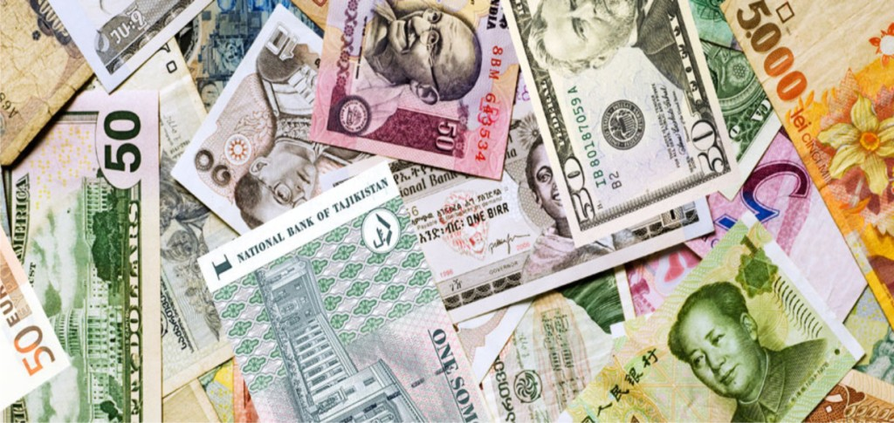
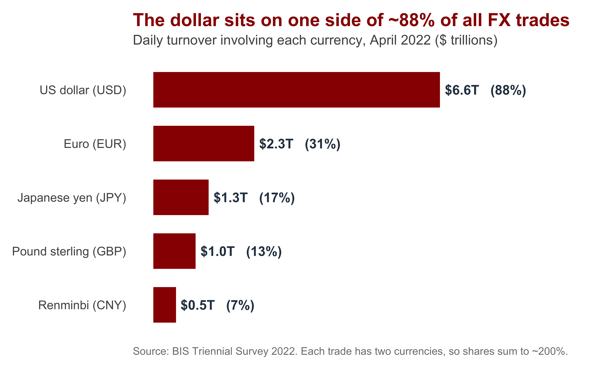
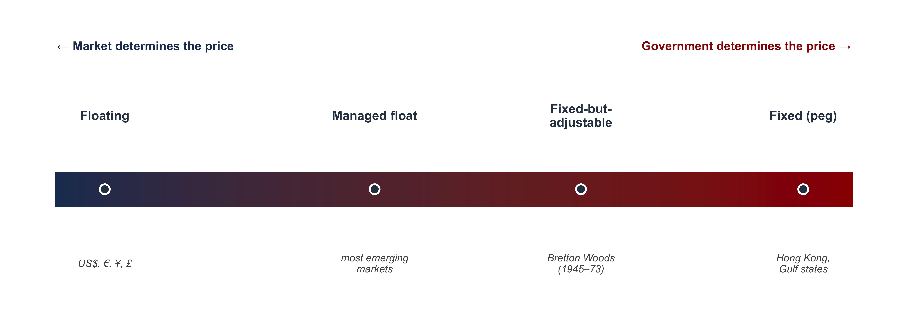
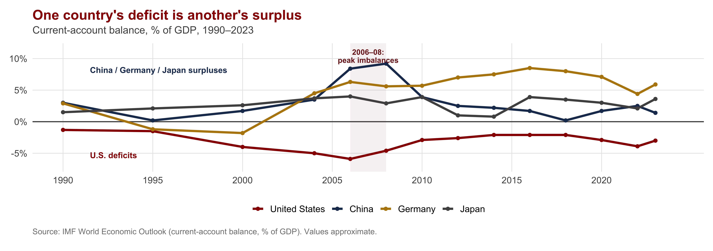
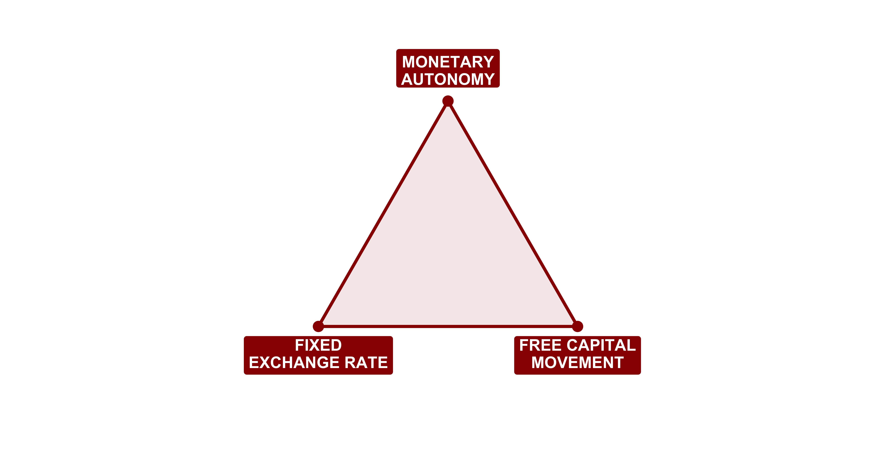
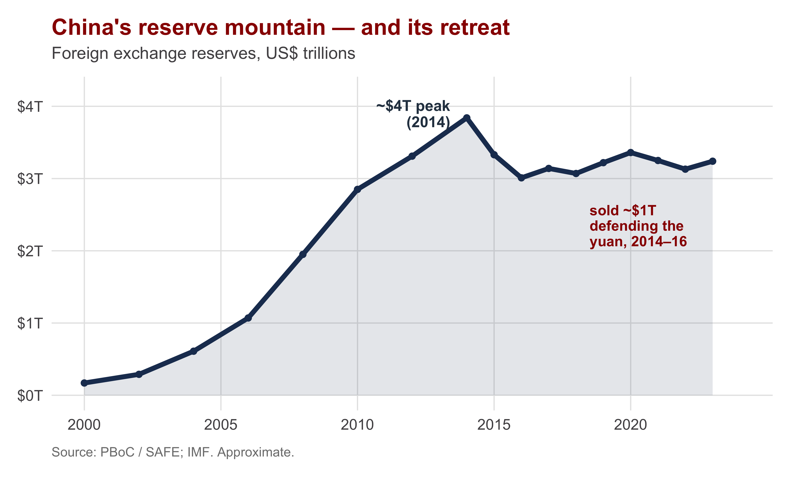

| Section | What we'll cover |
|---|---|
| 1 · Money Across Borders | The foreign exchange market, and what makes a currency "hard" |
| 2 · The Menu of Exchange-Rate Systems | Fixed, floating, managed — and the costs each one carries |
| 3 · The Balance of Payments | How a country's accounts must balance, and what forces adjustment |
| 4 · The Trilemma: Why You Can't Have It All | Fixed rates, free capital, monetary autonomy: pick any two |
| 5 · Three Monetary Orders in 150 Years | Gold standard, Bretton Woods, and today's float — who governs? |
| 6 · The Future of Monetary Power | Digital currencies, the digital RMB vs. the dollar, and "is China a manipulator?" |
The International Monetary System
INTL 503 | Chapter 10
Professor Sarah Bauerle Danzman
July 20, 2026
Today’s Plan
Today’s Big Question
How does the international monetary system work? What are the political implications of technical choices and technical constraints?
Before We Start: A Two-Minute Write
Writing prompt. You wake up and one U.S. dollar buys 150 yen instead of yesterday’s 100 yen. The dollar has gotten stronger; the yen weaker.
Name one group of people this helps and one it hurts — and say why. Think about a U.S. tourist in Tokyo, a Toyota dealer in Indiana, an American soybean farmer who exports to Japan, and a Japanese family buying an iPhone.
No prep needed — write for two minutes from intuition. By the end of today you’ll have the vocabulary to say it precisely. We’ll come back to your answers in the discussion.
Money Across Borders Facilitates Trade
Section 1
The Core Idea
An exchange rate is just a price: the price of one country’s money expressed in another’s.
Every cross-border transaction — a vacation, an import, a factory investment — first requires trading one currency for another.
The alternative, barter, requires a double coincidence of wants — an Indiana soybean farmer would have to find a Japanese buyer who wants soybeans and offers exactly what the farmer wants in return.
Because it is a price, an exchange rate moves when supply and demand for a currency move — and a government that wants to control that price has to do something about the supply and demand. That “something” is what we’re learning today.

Currencies trade against one another at a price — the starting point for every cross-border deal.
Where Currencies Trade
The foreign exchange market is the global, decentralized marketplace where currencies are bought and sold. It is the largest financial market on earth — turnover is on the order of $7.5 trillion per day (BIS, 2022).
| Type | What it is | Why |
|---|---|---|
| Hard currency | Deep, liquid markets; trusted to hold value; easily converted (US$, €, ¥, £) | Issuer is trusted to keep inflation low and repay its debts |
| Soft currency | Thin markets; converted only through a hard currency; weak demand abroad | Issuer's macro-stability is in doubt; others won't hold it |
| Key (vehicle) currency | A hard currency used as the world's default for trade, invoicing & reserves — above all the US dollar | ~88% of all FX trades have the dollar on one side |
A currency is “hard” only because the government behind it is trusted. Money is, in the end, a political promise — which is why monetary power and state credibility travel together.
How Big Is the FX Market?
A market like no other. Daily turnover:
- Global FX: ~$7.5 trillion
- New York Stock Exchange: ~$80 billion → FX is ~90× larger
- Germany’s Deutsche Börse (Xetra): ~$5 billion → FX is ~1,500× larger
One day of currency trading exceeds a month of the world’s major stock exchanges combined.

Key Vocabulary: Appreciation & Depreciation
Appreciation
A currency gets stronger — buys more foreign money.
- $1 → ¥100, then $1 → ¥150: the dollar appreciates
- Imports get cheaper; your exports get more expensive abroad
- Fixed-rate twin: an official move up is a revaluation
Depreciation
A currency gets weaker — buys less foreign money.
- $1 → ¥150, then $1 → ¥100: the dollar depreciates
- Imports get pricier; your exports get cheaper abroad
- Fixed-rate twin: an official move down is a devaluation
Recall your initial writing prompt: A stronger dollar delights the U.S. tourist and the importer buying cheaper Japanese cars — but it hurts the soybean farmer whose exports just got pricier abroad (and the Japanese family, since the weak yen makes the dollar-priced iPhone more expensive). Every exchange-rate move creates winners and losers. That is why this is political economy.
Which groups then organize around those gains and losses — and how they shape policy — is the heart of Ch 12 (Thursday). Today we just need the mechanics.
The Menu of Exchange-Rate Systems
Section 2
A Government’s First Design Choice: How Is the Currency Price Set?
A country’s exchange-rate system is the rule it adopts for how its currency’s price gets determined — by the market, by the government, or by some blend of the two.
| System | How the price is set | Example |
|---|---|---|
| Floating exchange-rate system | Price is set purely by market supply & demand; the government does not intervene | US$, €, ¥, £ |
| Fixed exchange-rate system (peg) | Government picks a target value (a "par value") and buys/sells its own currency to hold it there | Hong Kong $, Gulf pegs, pre-2005 China |
| Managed float ("dirty float") | Mostly market-determined, but the government intervenes when it dislikes the direction or speed | Most emerging markets in practice |
| Fixed-but-adjustable system | Fixed in normal times, but the peg can be officially re-set when conditions fundamentally change | The Bretton Woods system (1945–73) |
These aren’t four discrete but a spectrum from pure market to pure government control. Remember - an exchange rate has two sides, so a government can really only control one side of the transaction.
The Fixed vs. Floating Spectrum

The textbook “pure” cases — a perfectly free float, a rock-hard peg — are rare. Most real-world regimes live in the managed middle, which is precisely why the charge “that government is manipulating its currency” is so slippery.
When Governments Wall Off the Market: Exchange Restrictions
Fixing a price is hard if money can flood in and out freely. So some governments use exchange restrictions — controls that limit the convertibility of the currency or the cross-border movement of capital.
- Limits on buying foreign currency or moving money abroad
- Caps on foreign investment in or out
- Requirements to surrender export earnings to the central bank
By walling the market off, a government gains more control over its currency’s price — it can defend a peg without being swamped by capital flows.
But control isn’t free. The costs: a less open, less liquid economy, less foreign investment, and often evasion, capital flight, and black-market exchange rates.
Under Bretton Woods, such controls were the norm, not the exception — national financial systems were walled off from one another by design. Today China is the most important large economy that still restricts capital movement.
The Balance of Payments
Section 3
The Country’s Ledger With the World
The balance of payments (BoP) is the complete record of all economic transactions between a country’s residents and the rest of the world over a period — every export, import, investment, and loan.
| Account | What it records | Example |
|---|---|---|
| Current account | Trade in goods & services, plus income and transfers — money from selling/buying real things | Exports − imports (X − M) |
| Capital account | A small, specialized account: capital transfers and non-produced, non-financial assets | Debt forgiveness, patents |
| Financial account | Cross-border purchases of assets — FDI, stocks, bonds, bank loans, and official reserves | A Japanese fund buying U.S. Treasuries |
Heads-up on vocabulary: older texts (and Oatley) often fold the tiny capital account into the financial account and speak of just two big buckets — the current account and the financial/capital account. We’ll do the same.
The National Income Identity is a Structural Constraint
1 · National income identity — output = all spending on it: \[Y = C + I + G + (X - M)\]
2 · Define national saving — income not consumed (households + government): \[S \equiv Y - C - G\]
3 · Substitute (1) into (2) — the \(C\) and \(G\) cancel: \[S = \big[\,C + I + G + (X - M)\,\big] - C - G\]
4 · Move investment across: \[\underbrace{\,S - I\,}_{\textbf{financial account}} \;=\; \underbrace{\,X - M\,}_{\textbf{current account}}\]
A current-account deficit (\(X < M\)) must be financed by a financial-account surplus (\(S < I\)) — selling assets or borrowing abroad. The two are mirror images that sum to zero.
In plain words: if a country consumes more than it produces, the gap is borrowed from foreigners. The U.S. runs a current-account deficit because the world is eager to buy U.S. assets — an identity, not a coincidence.
Global Imbalances

This is the accounting identity, not a theory. Thirty years of U.S. deficits are matched by surpluses in China, Germany, and Japan — one country’s deficit is another’s. Who should bear the cost of unwinding them is the central political fight of Ch 11 (Day 10); today we just establish that the imbalance exists by accounting necessity.
When the Books Won’t Balance: Adjustment & Reserves
The accounts must balance — so when they don’t at the going exchange rate, something has to give. That something is balance-of-payments adjustment.
How a country can adjust
- Let the currency move — depreciation makes exports cheaper, imports dearer, closing a deficit
- Tighten policy — higher interest rates / less spending cools imports
- Use the buffer — run down foreign exchange reserves
Foreign exchange reserves are the stockpile of hard currency (and gold) a central bank holds to defend its exchange rate and pay foreign bills.
A fixed-rate country spends reserves to prop up its currency — but reserves are finite. When they run low, the peg is in danger.
The choice of adjustment tool decides who bears the cost — borrowers, exporters, consumers, or the unemployed. Adjustment is never neutral; it is distributive — which is why it becomes political tomorrow.
The Trilemma: Why You Can’t Have It All
Section 4
The Impossible Trinity

A government can have at most two of these three. Wanting all three is the universal temptation — and the impossible one.
What Happens When a Government Tries to Cheat the Trilemma
When a fixed rate falls out of line with economic fundamentals, markets notice — and pounce.
Fundamental disequilibrium
A peg set at the wrong value — one the country can’t sustain without endlessly burning reserves or strangling its economy. The rate “should” move, but officially it’s fixed.
Speculative attack
Seeing a peg that must eventually break, traders sell the currency en masse — betting on devaluation. The selling drains reserves faster, forcing the very collapse they bet on. A self-fulfilling stampede.
The fixed-but-adjustable design tried to solve this: devalue officially in cases of fundamental disequilibrium before a panic hits. But admitting your currency is overvalued can itself trigger the stampede — the trap at the center of currency crises.
Three Monetary Orders in 150 Years
Section 5
Three Orders, Three Sides of the Trilemma
![An impossibility (trilemma) triangle. The three corners are Fixed Exchange Rate, Free Capital Movement, and Monetary Autonomy. Each side is colored and labeled with the monetary order that made that pair of choices: the bottom side (fixed rate plus free capital, giving up monetary autonomy) is the Classical Gold Standard 1870-1914; the left side (fixed rate plus monetary autonomy, giving up capital mobility) is Bretton Woods 1945-73; the right side (free capital plus monetary autonomy, giving up the fixed rate) is the floating era 1973 to today.](day09-chapter10_files/figure-revealjs/fig-orders-triangle-1.png)
Each order keeps two goals and surrenders the third: gold gave up monetary autonomy, Bretton Woods gave up capital mobility, the float gives up the fixed rate. No order escaped the triangle — and the interwar years (in the figure) had no stable regime at all.
The Classical Gold Standard (1870–1914)
Every currency fixed to gold — and therefore to every other currency. Self-regulating and automatic: a country losing gold saw its money supply shrink and prices fall until trade rebalanced.
- The corner sacrificed: monetary autonomy. Defending gold meant accepting deflation, recession, and unemployment at home
- Worked under British hegemony — but the costs fell on workers and farmers who couldn’t vote those costs away
- William Jennings Bryan, 1896: “You shall not crucify mankind upon a cross of gold”
Bryan’s “Cross of Gold” speech (1896) attacked the gold standard’s deflationary grip on farmers
Interwar interlude (1914–1944): no stable regime. WWI ended the gold standard; 1920s attempts to rebuild it collapsed in the Depression into competitive devaluations and beggar-thy-neighbor currency wars that contributed to WWII.
Bretton Woods (1944–1971): A Designed Order
In 1944, 44 nations met at Bretton Woods, New Hampshire to build a system that kept fixed-rate stability without gold-standard brutality.
- The U.S. dollar fixed to gold at $35/oz; every other currency pegged to the dollar — fixed-but-adjustable
- Capital controls were built in, so countries kept some monetary autonomy (the trilemma corner they protected)
- A new institution — the IMF — would manage the system
John Maynard Keynes, architect of the Bretton Woods negotiations
The Bretton Woods system chose differently from the gold standard: it sacrificed capital mobility instead of monetary autonomy — embedding markets in domestic political stability (“embedded liberalism”).
The IMF: Referee and Emergency Lender
The International Monetary Fund was created to make fixed-but-adjustable rates work — supplying the cooperation the gold standard never had.
| Tool | What it does | The tension |
|---|---|---|
| Stabilization fund | A common pool of member-contributed currencies the IMF lends to countries facing a balance-of-payments / reserves crisis — a buffer against speculative attack | Buys time so a country need not devalue or deflate overnight |
| Conditionality | Loans come with strings: the borrower must adopt policy reforms (austerity, devaluation, liberalization) to fix the underlying imbalance | Lender protection — but deeply resented as outside interference in sovereignty |
| Adjustment referee | The IMF judged whether a country was in genuine fundamental disequilibrium and could approve an orderly change in its peg | Tried to make devaluation orderly rather than a panic |
The IMF still does all three today — most visibly conditionality, which makes it one of the most powerful and most criticized institutions in the world economy.
The Collapse and the Floating Era (1971–today)
Nixon ended dollar–gold convertibility on August 15, 1971
By the late 1960s the U.S. had printed more dollars than it held gold to back. As confidence eroded, speculative attacks mounted. In August 1971, Nixon closed the gold window — and by 1973 the major currencies floated.
- We’ve lived in a floating era ever since: the dollar, euro, yen, and pound are priced by markets
- The sacrificed corner flipped to the fixed rate — bought with free capital + monetary autonomy
- But “floating” is messy: most countries manage their floats, and the dollar still anchors the system (which keeps it “strong”)
The deep cause of collapse was the adjustment problem: neither the U.S. (unwilling to deflate) nor surplus Germany (unwilling to inflate) would bear the cost. No one would adjust — so the system broke.
The Future of Monetary Power
Section 6 · Bridge to the politics
Student Presentation
Over to today’s presenter
Huang & Mayer (2022) — “Digital currencies, monetary sovereignty, and U.S.–China power competition”
Presenter: ______________________ · Q&A and class discussion to follow
Writing Prompt: Is China a Currency Manipulator?
Drawing on the podcast — Trade Talks #95, “Is China a Currency Manipulator?” — and today’s mechanics:
Write an argued response (15–20 min):
- Using the reserves data, describe what China was doing to the yuan in 2000–2014 vs. 2015–2016 — pushing it down, or holding it up?
- Take a position: is “currency manipulator” a fair label for China?
- Use at least two terms from today — managed float, foreign exchange reserves, the (S − I) = (X − M) identity, trade externalities — and name the strongest objection to your view.

Write for 15–20 minutes, then we’ll discuss. Credit / no-credit — I’m looking for correct use of the concepts and a clear, defended position.
Recap: The Mechanics Behind the Politics
Today’s Big Question — How does the international monetary system work? And what are the political implications of its technical choices and constraints?
The toolkit we built
- An exchange rate is a price; currencies trade in the FX market, and “hard” means trusted
- Governments pick an exchange-rate system: fixed, floating, managed, fixed-but-adjustable
- The balance of payments must balance: (S − I) = (X − M) — surplus and deficit are mirror images
The politics of technical constraints
- The trilemma: fixed rate, free capital, monetary autonomy — pick two
- Three orders — gold standard, Bretton Woods, the float — each gave up a different corner
- The unsolved problem is adjustment: who bears the cost? That fight is tomorrow’s politics
- On the horizon: digital currencies — crypto vs. CBDCs like the digital RMB — reopen the question of who controls money
The trilemma is where the technical becomes political: it forces a choice — which goal to give up, and so which groups bear the cost. That choice — who pays — is the political-economy question the rest of this unit takes up.

INTL 503 | The International Monetary System